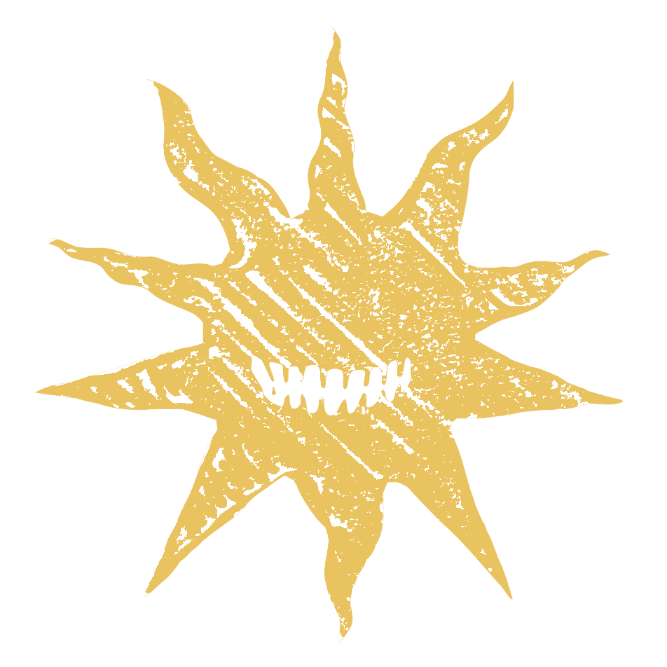

Thanks for supporting Kuvacult.
Your support means a lot. Close this page and return to the app — your supporter badge will show up shortly.

Your support means a lot. Close this page and return to the app — your supporter badge will show up shortly.